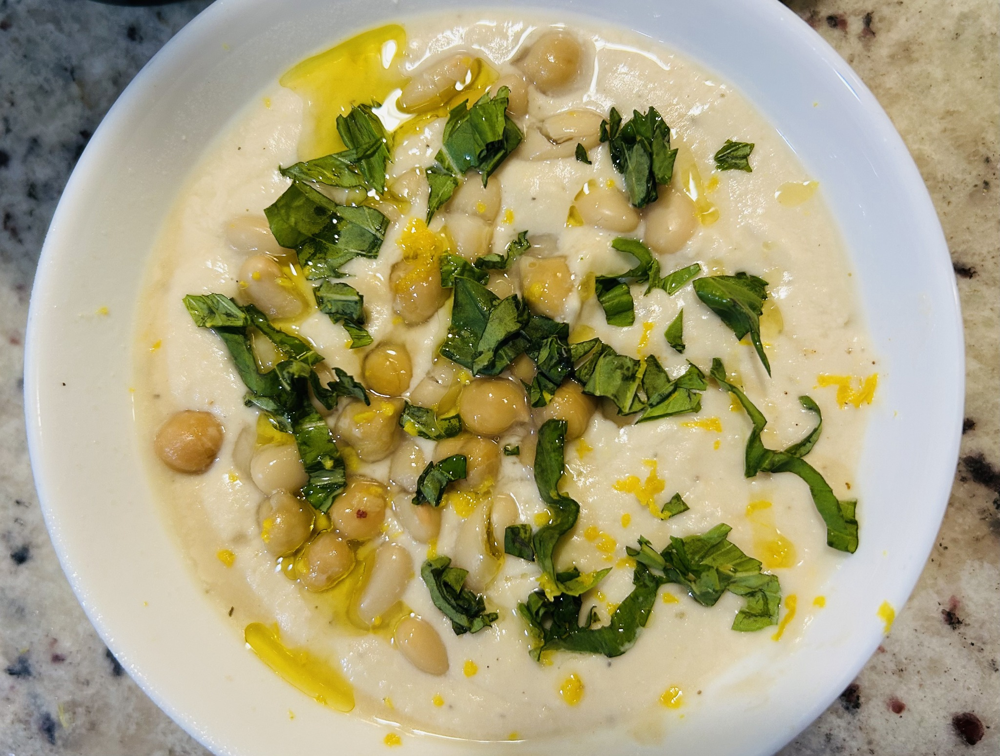

Side
Warm Cannellini Dip
A warm, very smooth white-bean dip: brighter than hummus, especially good with lemon zest and basil, and easy to push towards a thicker, almost whipped texture.

Ingredients
- 1 can cannellini beans, drained, with a few reserved
- 2 tbsp extra-virgin olive oil
- 2 tbsp fresh lemon juice
- 1/2 tsp lemon zest
- 1 small garlic clove
- 1/2 tsp sea salt
- 1/2 tsp ground coriander
- Pinch of black pepper
Optional thickener
- 10 roasted cashews
- 7 small bread croutons
Method
- Microwave the canned beans for about 1 minute in their liquid, then drain without rinsing.
- Blend the warm beans with olive oil, lemon juice and zest, garlic, salt, coriander and pepper until smooth.
- For a thicker consistency, blend in the roasted cashews and croutons.
- Serve warm with reserved beans, about a teaspoon of olive oil and fresh basil or another green herb.
Notes
Warming the beans first makes the dip softer and silkier. The cashew-and-crouton variation gives a dense, scoopable consistency without simply adding more oil.